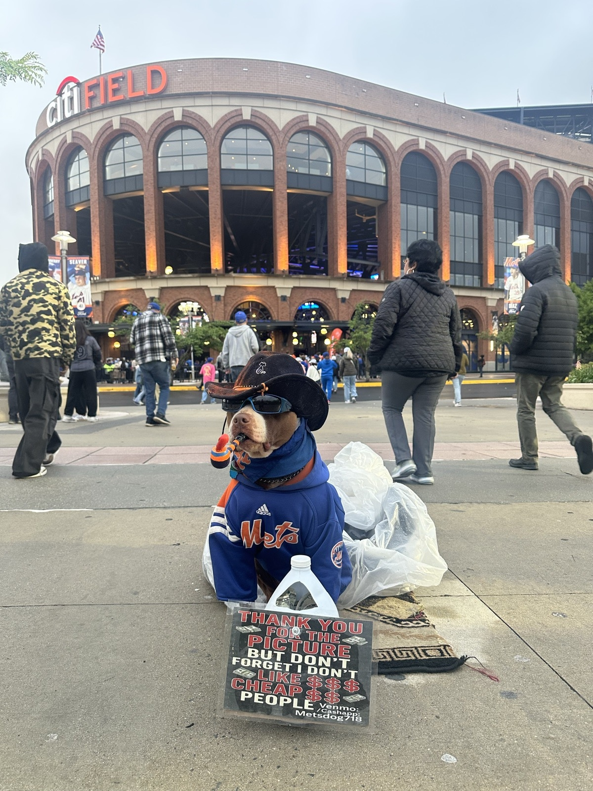
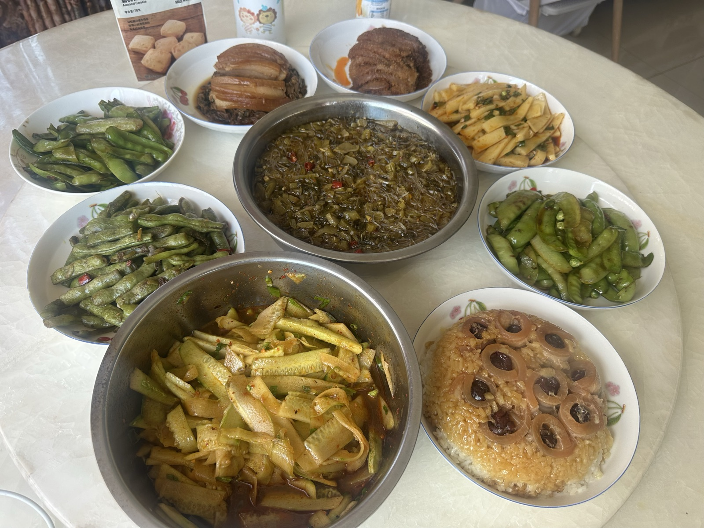

Studying what AI agents do together,
before they do it at scale.
I'm currently working on multi-agent safety. One agent can be evaluated; a society of them develops behaviors nobody designed — coordination, collusion, cascading failures. My work is on making those dynamics visible, measurable, and governable before deployment makes them irreversible.
Current threads: emergent communication between agents, oversight that scales past one-on-one monitoring, and evaluations for agent populations rather than individual models. Previously under Jijun Tang and Yan Tong at University of South Carolina. Master's at Tsinghua.
Selected research
Stress-tests activation-based multi-agent collusion monitoring when suspected colluders are opaque. Finds that the original white-box signal is local, trusted honest agents recover a distinct sentinel signal (AUROC 0.806→0.917), and strong ranking still fails to yield a stable low-false-intervention threshold across held-out domains.
Small segmentation models pull tumor and vessel features out of the scan; a large model reasons over them with chain-of-thought prompting and retrieval-augmented generation, so answers stay anchored to trusted cases instead of hallucinated ones.
Pairs explainable attribution with uncertainty quantification, so the classifier reports not just a label but how far that label should be trusted.
A control-function regularizer for deformable registration, measured against gradient and Laplacian smoothness losses on ADNI and IBSR with VoxelMorph.
Writing
Off-hours
I cherish small things in life.

